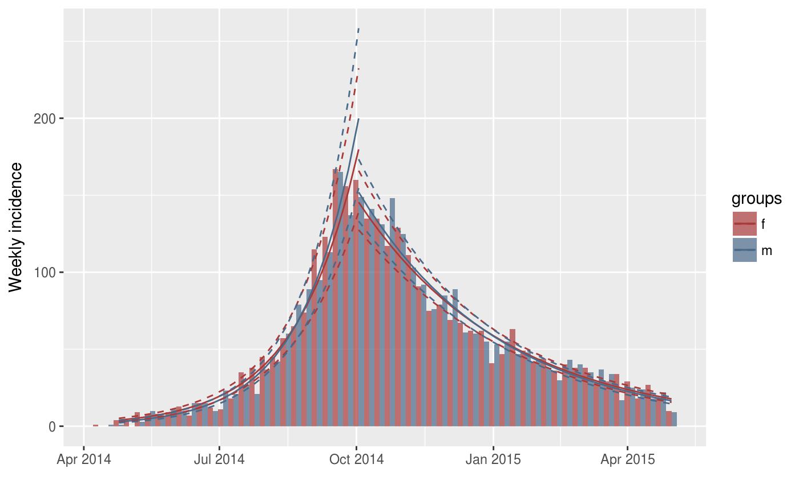
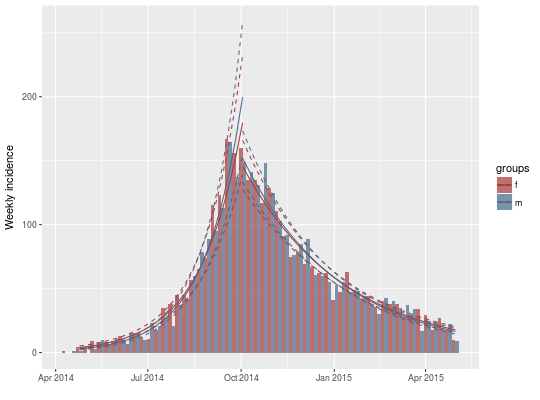
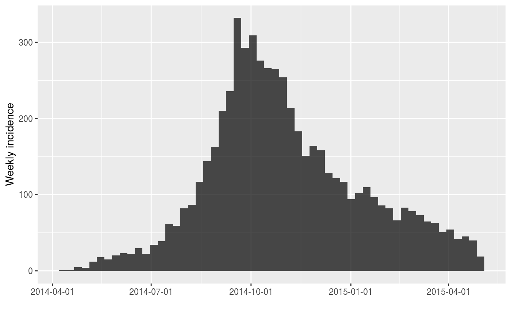
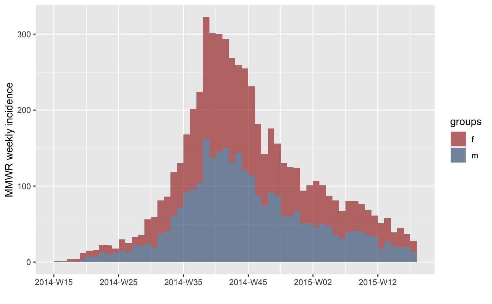
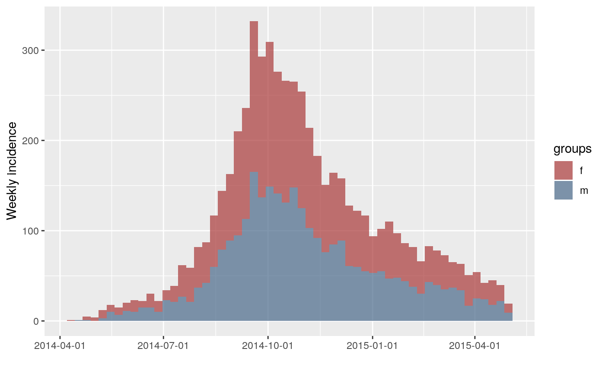
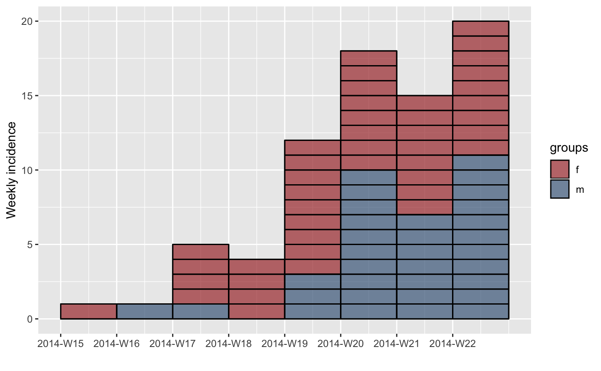
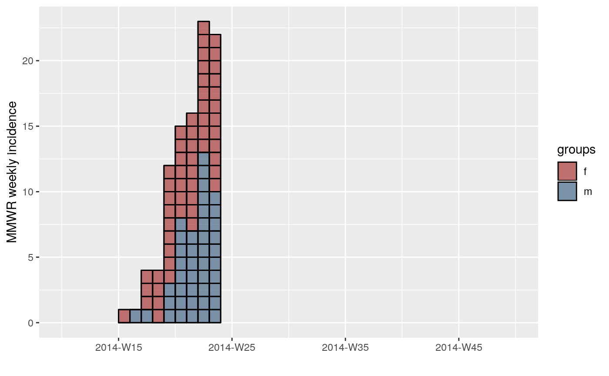
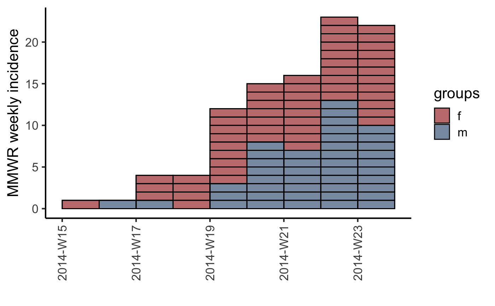
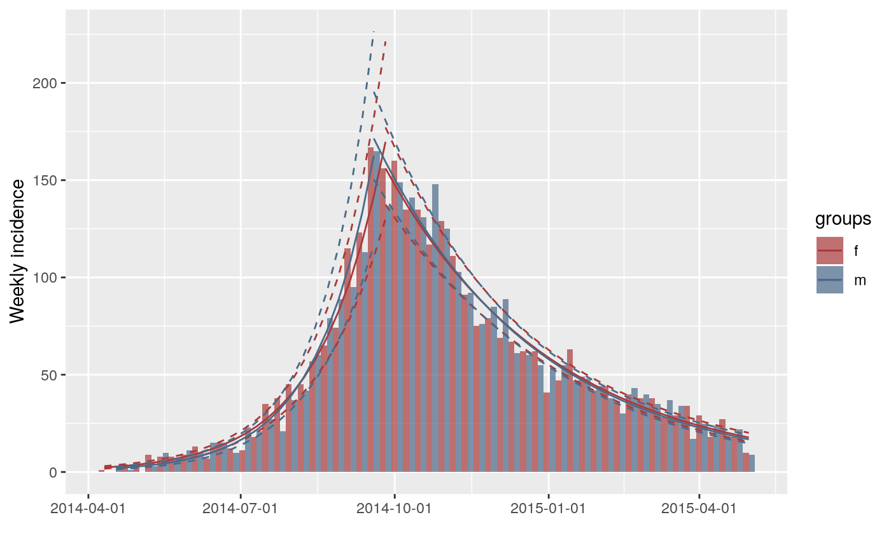

plot.incidence.RdThis function is used to visualise the output of the incidence()
function, using the package ggplot2.
# S3 method for incidence plot(x, ..., fit = NULL, stack = is.null(fit), color = "black", border = NA, col_pal = incidence_pal1, alpha = 0.7, xlab = "", ylab = NULL, labels_iso = !is.null(x$isoweeks), show_cases = FALSE, n_breaks = 6) add_incidence_fit(p, x, col_pal = incidence_pal1) # S3 method for incidence_fit plot(x, ...) # S3 method for incidence_fit_list plot(x, ...)
| x | An incidence object, generated by the function
|
|---|---|
| ... | Further arguments passed to other methods (currently not used). |
| fit | An 'incidence_fit' object as returned by |
| stack | A logical indicating if bars of multiple groups should be stacked, or displayed side-by-side. |
| color | The color to be used for the filling of the bars; NA for invisible bars; defaults to "black". |
| border | The color to be used for the borders of the bars; NA for invisible borders; defaults to NA. |
| col_pal | The color palette to be used for the groups; defaults to
|
| alpha | The alpha level for color transparency, with 1 being fully opaque and 0 fully transparent; defaults to 0.7. |
| xlab | The label to be used for the x-axis; empty by default. |
| ylab | The label to be used for the y-axis; by default, a label will be generated automatically according to the time interval used in incidence computation. |
| labels_iso | a logical value indicating whether labels x axis tick marks are in ISO 8601 week format yyyy-Www when plotting ISO week-based weekly incidence; defaults to be TRUE. |
| show_cases | if |
| n_breaks | the ideal number of breaks to be used for the x-axis labeling |
| p | An existing incidence plot. |
The incidence() function to generate the 'incidence'
objects.
if(require(outbreaks) && require(ggplot2)) { withAutoprint({ onset <- ebola_sim$linelist$date_of_onset ## daily incidence inc <- incidence(onset) inc plot(inc) ## weekly incidence inc.week <- incidence(onset, interval = 7) inc.week plot(inc.week) # default to label x axis tick marks with isoweeks plot(inc.week, labels_iso = FALSE) # label x axis tick marks with dates plot(inc.week, border = "white") # with visible border ## use group information sex <- ebola_sim$linelist$gender inc.week.gender <- incidence(onset, interval = 7, groups = sex) plot(inc.week.gender) plot(inc.week.gender, labels_iso = FALSE) ## show individual cases at the beginning of the epidemic inc.week.8 <- subset(inc.week.gender, to = "2014-06-01") plot(inc.week.8, show_cases = TRUE, border = "black") ## customize plot with ggplot2 plot(inc.week.8, show_cases = TRUE, border = "black") + theme_classic(base_size = 16) + theme(axis.text.x = element_text(angle = 90, hjust = 1, vjust = 0.5)) ## adding fit fit <- fit_optim_split(inc.week.gender)$fit plot(inc.week.gender, fit = fit) plot(inc.week.gender, fit = fit, labels_iso = FALSE) })}#> > onset <- ebola_sim$linelist$date_of_onset #> > inc <- incidence(onset) #> > inc #> <incidence object> #> [5888 cases from days 2014-04-07 to 2015-04-30] #> #> $counts: matrix with 389 rows and 1 columns #> $n: 5888 cases in total #> $dates: 389 dates marking the left-side of bins #> $interval: 1 day #> $timespan: 389 days #> $cumulative: FALSE #> #> > plot(inc)#> > inc.week <- incidence(onset, interval = 7) #> > inc.week #> <incidence object> #> [5888 cases from days 2014-04-07 to 2015-04-27] #> [5888 cases from ISO weeks 2014-W15 to 2015-W18] #> #> $counts: matrix with 56 rows and 1 columns #> $n: 5888 cases in total #> $dates: 56 dates marking the left-side of bins #> $interval: 7 days #> $timespan: 386 days #> $cumulative: FALSE #> #> > plot(inc.week)#> > plot(inc.week, labels_iso = FALSE)#> > plot(inc.week, border = "white")#> > sex <- ebola_sim$linelist$gender #> > inc.week.gender <- incidence(onset, interval = 7, groups = sex) #> > plot(inc.week.gender)#> > plot(inc.week.gender, labels_iso = FALSE)#> > inc.week.8 <- subset(inc.week.gender, to = "2014-06-01") #> > plot(inc.week.8, show_cases = TRUE, border = "black")#> > plot(inc.week.8, show_cases = TRUE, border = "black") + theme_classic(base_size = 16) + #> + theme(axis.text.x = element_text(angle = 90, hjust = 1, vjust = 0.5))#> > fit <- fit_optim_split(inc.week.gender)$fit #> > plot(inc.week.gender, fit = fit)#> #>#> #>#> #>#> #>#> > plot(inc.week.gender, fit = fit, labels_iso = FALSE)#> #>#> #>#> #>#> #>